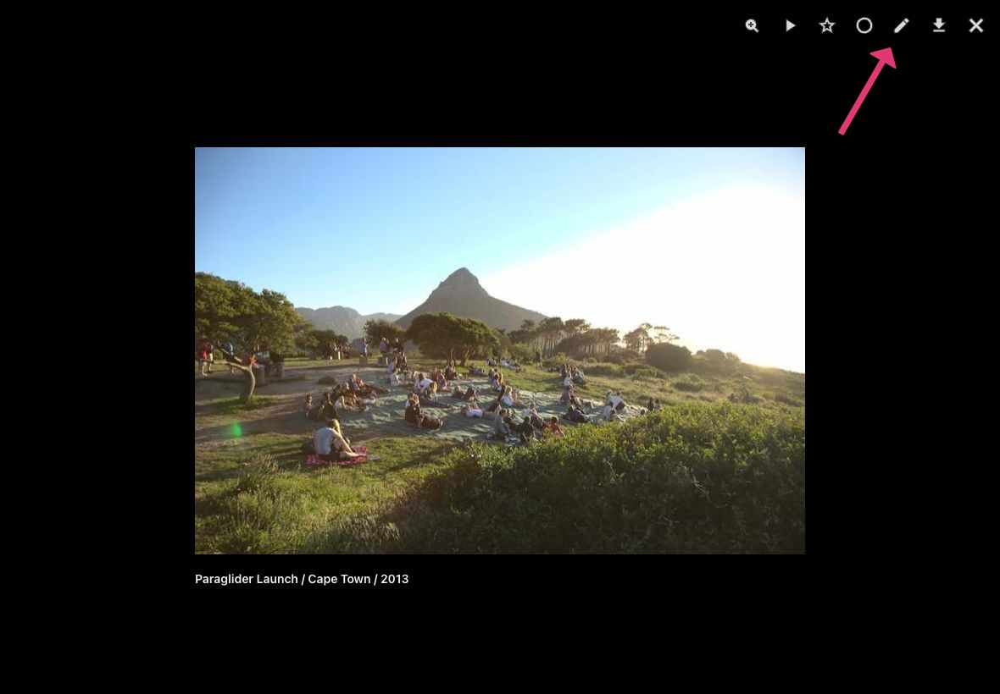
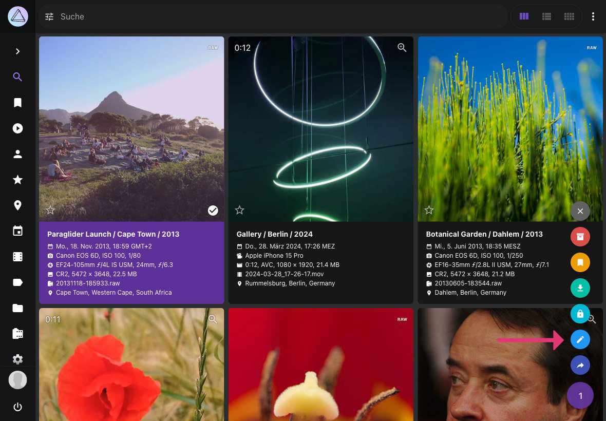
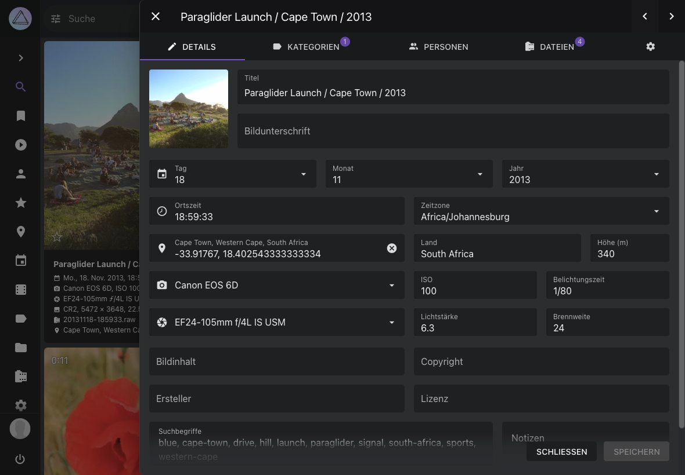
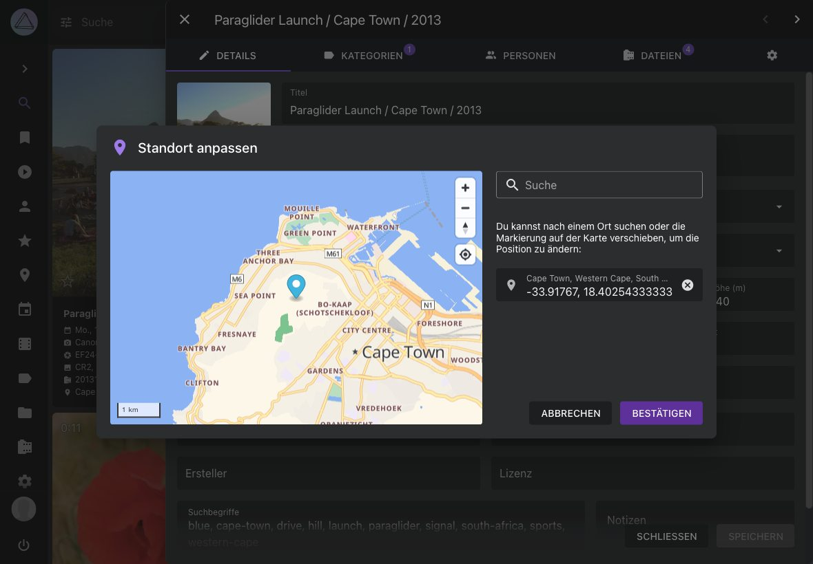
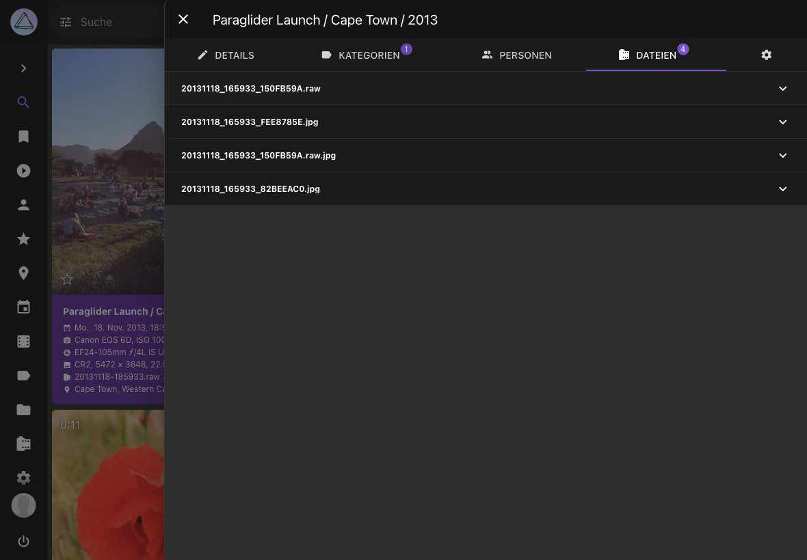

Bild Details bearbeiten¶
Der Bearbeitungs-Dialog ermöglicht es dir, Metadaten zu deinen Bildern hinzuzufügen oder vorhandene Metadaten zu bearbeiten.
Während der Indexierung liest PhotoPrism so viele Daten wie möglich aus Sidecar-Dateien oder den Bildern selbst aus.
Bearbeitungs-Dialog √∂ffnen¶
Klicke auf den Titel, den Aufnahmezeitpunkt oder die Kamerainformationen

Klicke auf , in der rechten oberen Ecke des Bildschirms 
Tastenkombination
Im Vollbild-Viewer kannst du den Bearbeitungs-Dialog schnell öffnen, indem du Strg + E drückst.
- Selektiere ein oder mehrere Bilder
- Öffne das Kontext-Menü
- Klicke auf

Bilddetails bearbeiten¶
Im Details-Tab können allgemeine Metadaten wie Titel, Datum, Ort, Kamera, Objektiv, Bildunterschrift und Copyright angezeigt und bearbeitet werden:

Viele dieser Informationen werden während der Indexierung automatisch erkannt und aktualisiert. Wenn diese Felder bearbeitet werden, werden die geänderten Werte beibehalten und auch bei einer erneuten Indexierung Ihrer Bibliothek nicht überschrieben.
Um schnell neue Koordinaten zu setzen, können diese in das Ort-Feld eingefügt werden, wenn sie das Format 48.265684, 7.721380 haben. Alternativ kann auf das Standortmarkierungs-Symbol neben diesem Feld geklickt werden, um die integrierte Standortkomponente zu öffnen und einen Ort visuell auszuwählen.
Durch Klicken auf die Schaltfläche Anwenden werden die vorgenommenen Änderungen gespeichert, ohne den Dialog zu schließen, während die Schaltfläche Schließen den Dialog schließt, ohne weitere Änderungen zu speichern.
Bei einer Suche kann Text in den Feldern Titel, Bildunterschrift und Suchbegriffe gefunden werden, während Notizen privat sind und ignoriert werden.
Standortauswahl
PhotoPrism enthält eine Standortkomponente, mit der Standortkoordinaten eines Bildes einfach geändert werden können, indem sein Standort auf einer Karte ausgewählt wird. Klicke einfach auf das Symbol neben dem Ort-Feld, um die interaktive Kartenoberfläche zu öffnen. Es kann auch nach Standorten gesucht werden, indem Stadt- oder Straßennamen direkt in die Kartenkomponente eingegeben werden.

Mit dieser integrierten Funktionalität wird das externe Geolocation Plugin nicht mehr benötigt. Wir danken unserer Community für ihren wertvollen Beitrag, der diese Funktion inspiriert hat!
Kategorien bearbeiten¶
Im Tab Kategorien können die Kategorien eines Bildes/Videos angesehen und verändert werden.
Personen bearbeiten¶
Im Tab Personen kannst du abgebildete Personen ansehen und editieren.
Dateien bearbeiten¶
Im Tab Dateien werden alle Dateien angezeigt, die zu einem Bild gehören. Ein Bild kann aus mehreren Dateien bestehen. Beispielsweise einer RAW-Datei, eine dazugehörige JPEG-Version sowie eine verknüpfte XMP/JSON Datei.

Um die Details einer Datei anzuzeigen, klicke auf .

Falls du Bildstapel bearbeitest, kannst du in dieser Ansicht das Anzeigebild wechseln oder gruppierte Dateien trennen.